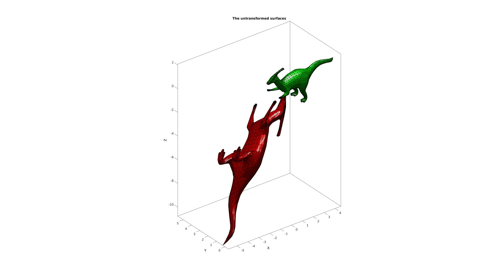
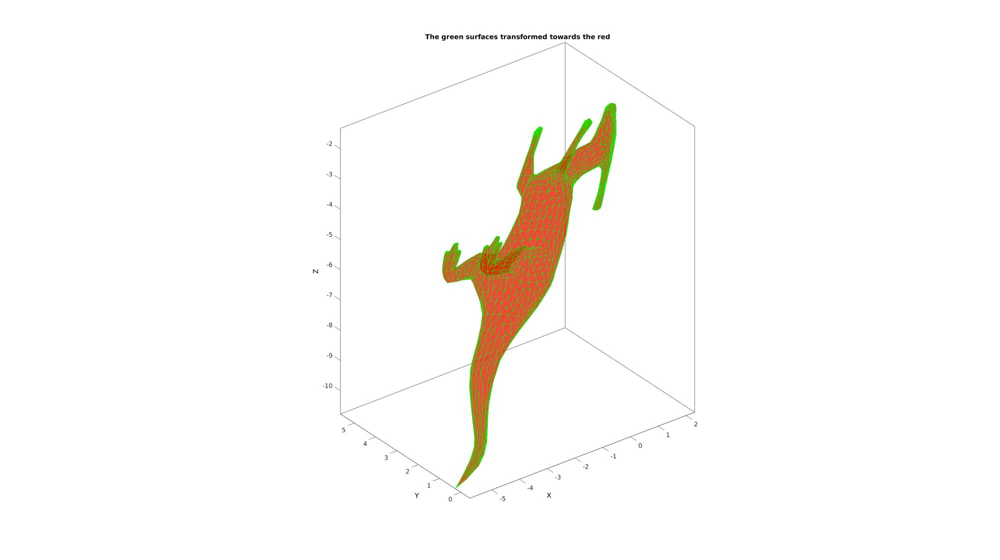

affineTransformationMatrixDirect
Below is a demonstration of the features of the affineTransformationMatrixDirect function
Contents
clear; close all; clc;
Syntax
[M]=affineTransformationMatrixDirect(V1,V2);
Description
This function computes the affine transformation matrix (translation, rotation, and scaling). For the two point matches input sets V1 and V2.
Examples
Plot settings
fontSize=15;
faceAlpha=1;
edgeColor='k';
Example:
Determine the affine transformation to overlay two surfaces
Below is a demonstration of the features of the affineTransformationMatrixDirect function
% Load example patch data [F,Vd]=parasaurolophus; %Translation OR=[-1 2 -3]; %Translations T = [1 0 0 OR(1);... 0 1 0 OR(2);... 0 0 1 OR(3);... 0 0 0 1]; %Rotation a=[-0.25*pi 0.75*pi 0.1*pi]; %Euler angles R = eye(4,4); R(1:3,1:3)=euler2DCM(a); %Scaling v=[2 3 1]; %Scaling factors S = [v(1) 0 0 0;... 0 v(2) 0 0;... 0 0 v(3) 0;... 0 0 0 1]; M_true = T * R * S; %The true transformation matrix %Point set 1 V1=Vd+0.5; %Point set 2 V2=tform(M_true,V1);
Plotting input data
hf=cFigure; title('The untransformed surfaces','FontSize',fontSize); xlabel('X','FontSize',fontSize); ylabel('Y','FontSize',fontSize); zlabel('Z','FontSize',fontSize); hp=patch('Faces',F,'Vertices',V1,'FaceColor','g','FaceAlpha',faceAlpha); hp=patch('Faces',F,'Vertices',V2,'FaceColor','r','FaceAlpha',faceAlpha,'edgeColor',edgeColor); camlight headlight; set(gca,'FontSize',fontSize); view(3); axis tight; axis equal; box on; drawnow;
Get the transformation matrix for the point matched data using affineTransformationMatrixDirect
[M_fit]=affineTransformationMatrixDirect(V1,V2); V1f=tform(M_fit,V1);
Plotting results
hf=cFigure; title('The green surfaces transformed towards the red','FontSize',fontSize); xlabel('X','FontSize',fontSize); ylabel('Y','FontSize',fontSize); zlabel('Z','FontSize',fontSize); hp=patch('Faces',F,'Vertices',V2,'FaceColor','r','FaceAlpha',0.5,'edgeColor',edgeColor); hp=patch('Faces',F,'Vertices',V1f,'FaceColor','none','FaceAlpha',0.5,'edgeColor','g'); % hp=patch('Faces',F,'Vertices',V2ff,'FaceColor','none','FaceAlpha',0.5*2,'edgeColor','b'); set(gca,'FontSize',fontSize); view(3); axis tight; axis equal; box on; drawnow;

GIBBON www.gibboncode.org
Kevin Mattheus Moerman, gibbon.toolbox@gmail.com
GIBBON footer text
License: https://github.com/gibbonCode/GIBBON/blob/master/LICENSE
GIBBON: The Geometry and Image-based Bioengineering add-On. A toolbox for image segmentation, image-based modeling, meshing, and finite element analysis.
Copyright (C) 2019 Kevin Mattheus Moerman
This program is free software: you can redistribute it and/or modify it under the terms of the GNU General Public License as published by the Free Software Foundation, either version 3 of the License, or (at your option) any later version.
This program is distributed in the hope that it will be useful, but WITHOUT ANY WARRANTY; without even the implied warranty of MERCHANTABILITY or FITNESS FOR A PARTICULAR PURPOSE. See the GNU General Public License for more details.
You should have received a copy of the GNU General Public License along with this program. If not, see http://www.gnu.org/licenses/.